Journal v2 J1: trades write their own entry
Broker-app trades come in by themselves. A spread is one entry. Plan vs actual shows only what differed.
| Item | Before | After |
|---|---|---|
| J1-1 Trades placed in the broker app | only by typing or a file import | "Sync from broker" + a daily run after the close; "From your broker" label; ATP's own orders matched; never twice |
| J1-2 Chart picture | drawn again on every view, never kept | stored on first draw (entry, exit), read from the store; erased with the account; in the export |
| J1-3 Spread | one row per leg | one row ("2 legs"), one entry: combined P&L, credit / debit, planned max loss vs loss taken, every leg |
| J1-4 Plan vs actual | - | one line per difference (fill vs signal price, stop moved by hand, closed by hand, part fill); "Went as planned." otherwise |
| Safety | read-only broker call; no order, exit or risk change; capture hooks untouched; same code PAPER and LIVE | |
List, 1440 light
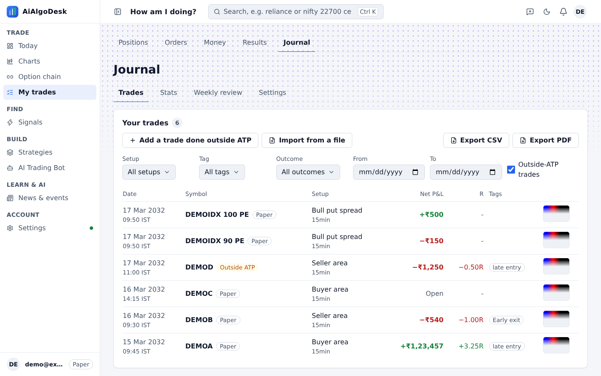
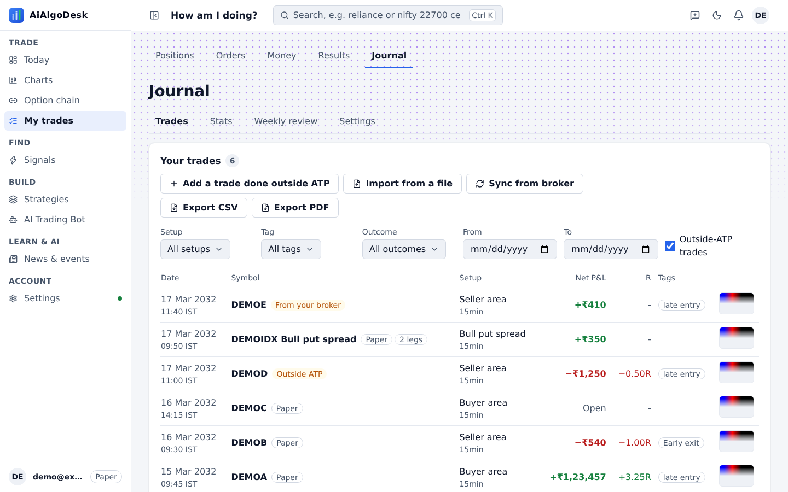
Entry sheet, 1440 light
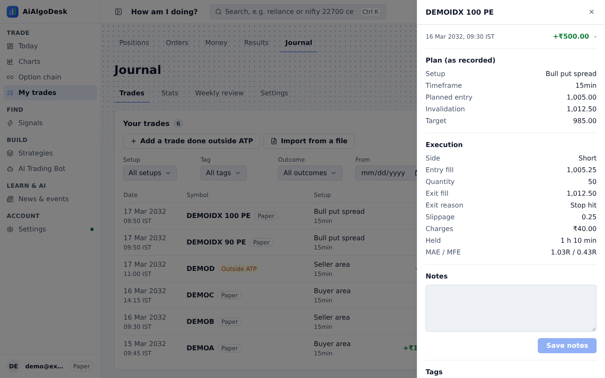
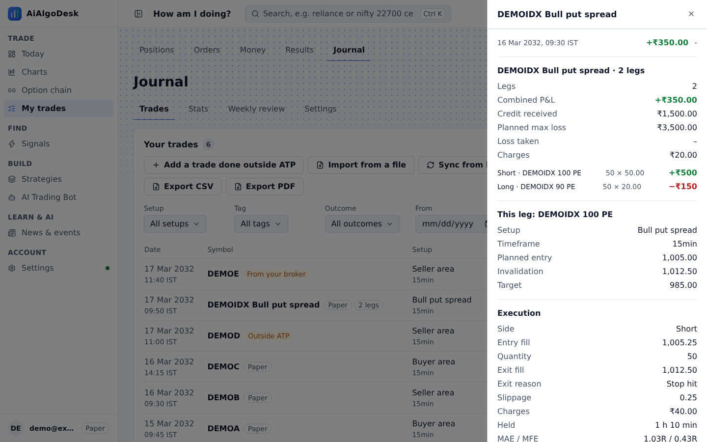
List, 1440 dark
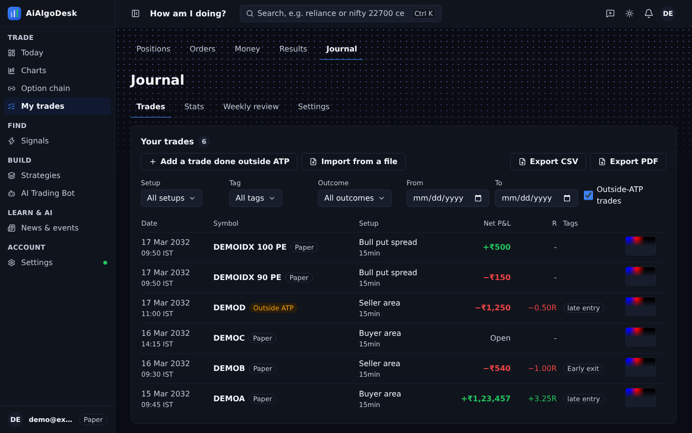
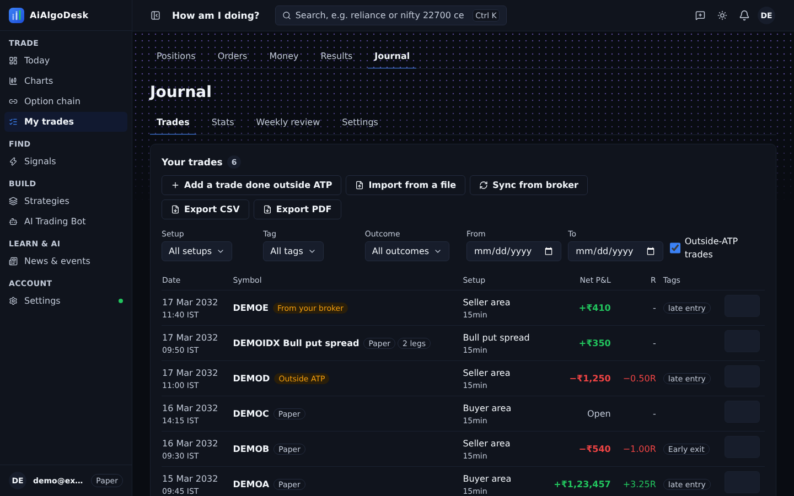
Entry sheet, 1440 dark
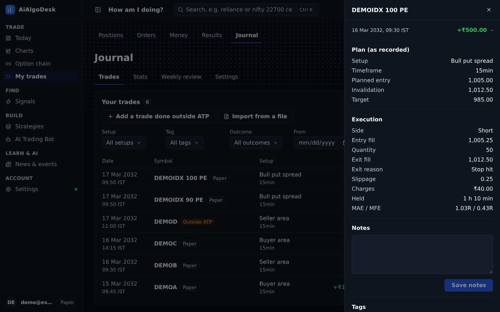
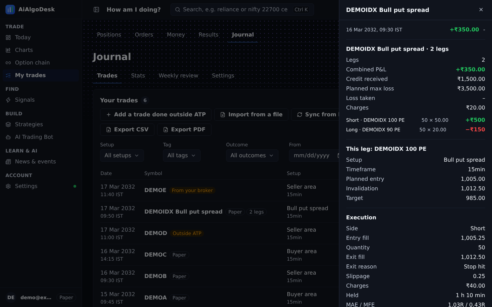
List, 390 light
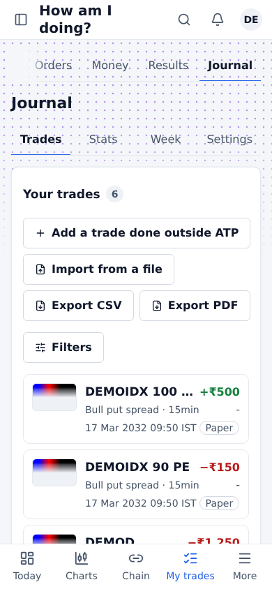
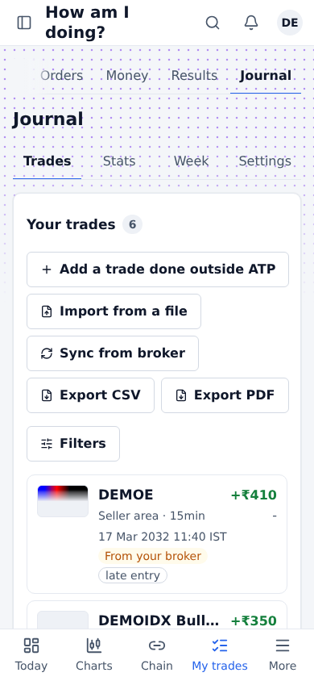
Entry sheet, 390 light
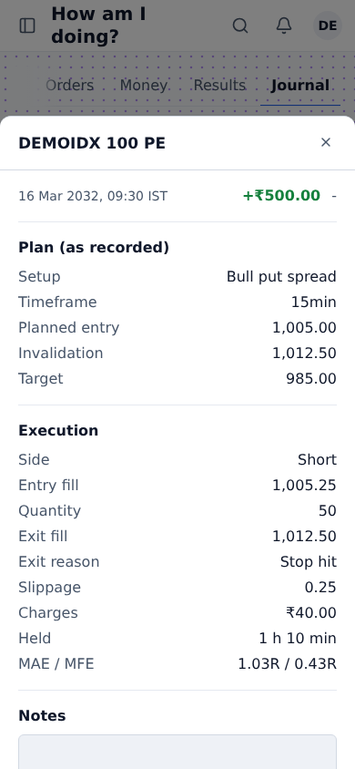
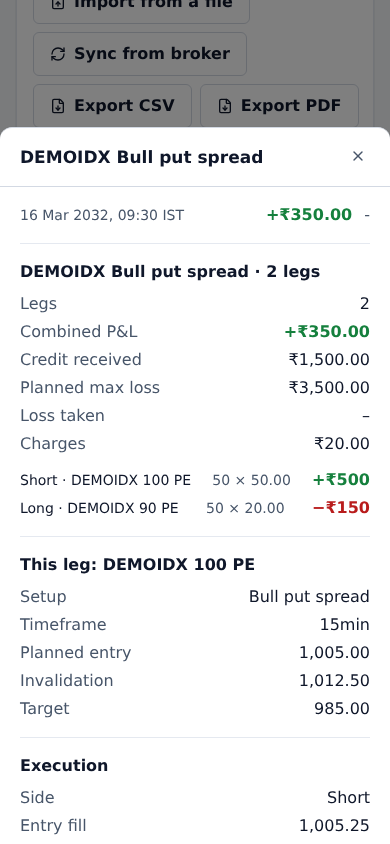
List, 390 dark
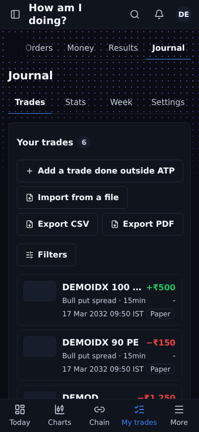
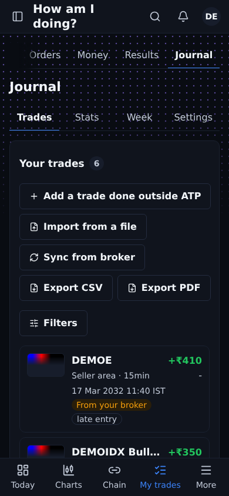
Entry sheet, 390 dark
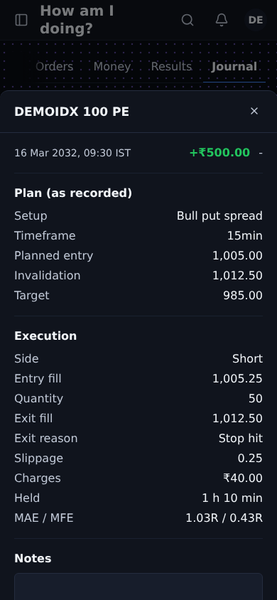
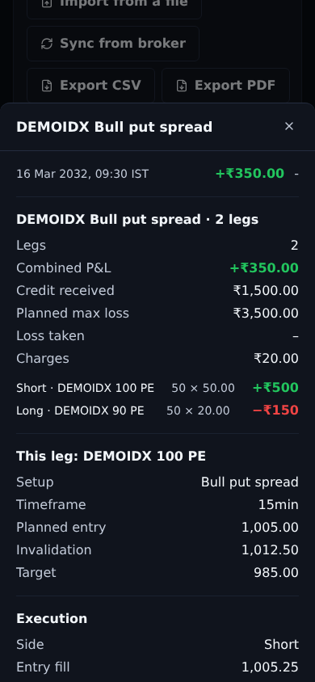
Made-up data only. Phone checks: no sideways scroll at 390 (asserted in the spec).